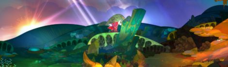
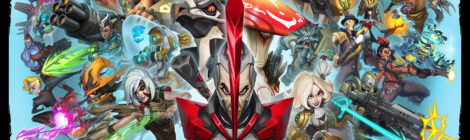

Video Games

Blizzard Unveils Free Overwatch Comics
Guys, Blizzard is going hard this week. Not only is Overwatch, the new multiplayer, first-person shooter that had plenty of people calling out “censorship” when the poses of a certain character were taken out of the game, going into open Beta from May 5 to May 9, but Blizzard also launched a line of free, digital comics to introduce people to the characters of the new game.

Introducing the Fangirl Podcast
Here at Fangirl, we love all sorts of things from video games to comics to board games and TV. We wanted a way to share what we’ve been playing/reading/watching with each other and with all of you! About every other week, we’ll talk about what we’ve been doing, the games we’ve been playing or the books we’ve been reading.
Pokemasochism: The Quest to Catch 'Em All In Pokemon's Modern Era
n honor of the 20th anniversary of Pokemon, and in preparation for Pokemon Sun and Moon, which will drop this holiday season, I decided to revisit my favorite handheld franchise. I wanted to see how the Pokeverse had changed. I wanted to know what had stayed the same.
Supergiant Games Announces New Title
Ready your bodies and your ears because Supergiant Games is coming out with a new title. The makers of the insanely popular Bastion and Transistor have released a teaser video for their new game Pyre and it. Looks. GORGEOUS.
Battleborn and Overwatch Might Have a Major Problem in Common
I’ve been playing the Battleborn beta the last few days, and one of my worries about both it and Overwatch is coming true. There are simply too many characters.